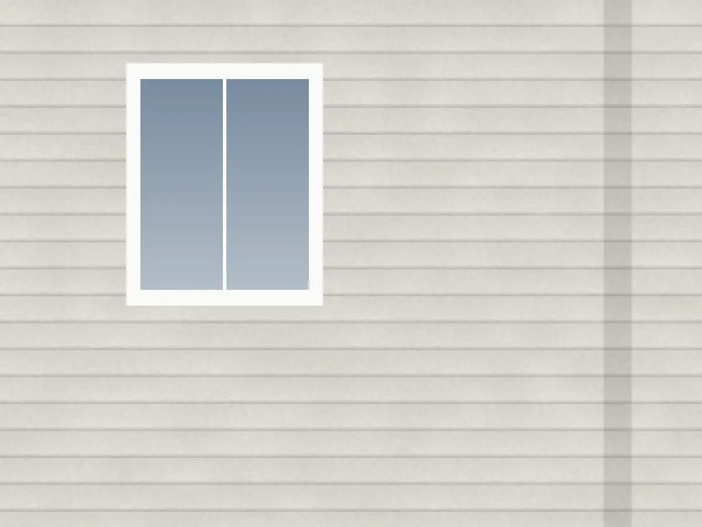

Mount Pleasant · Daniel Island · the islands
Soft washing for Lowcountry houses in Mount Pleasant and Charleston
Pollen, mildew and salt film come off with a gentle cleaner, not a pressure blast. Safe on Hardie, stucco, old heart pine and the haint blue porch ceiling.


When to wash in the Lowcountry
What we tell neighbors every year. Book a month ahead in spring and fall.
- Pine pollen
- Mildew grows fastest
- Hurricane season
- Best time to wash
-
Jan
Best time to wash.
Roofs. Cool, dry days are the best roof days.
-
Feb
Best time to wash.
Roofs and fences, before the pollen.
-
Mar
Pine pollen.
Pine pollen starts. Hold the house wash.
-
Apr
Pine pollen.
Pollen peaks. We start washing once it drops.
-
May
Best time to wash.
House wash season opens. Porches and screens.
-
Jun
Hurricane season, Mildew grows fastest.
Storm season starts June 1. Gutters.
-
Jul
Hurricane season, Mildew grows fastest.
Heat and humidity. North walls go green fast.
-
Aug
Hurricane season, Mildew grows fastest.
Mildew peak. Early-morning jobs only.
-
Sep
Hurricane season, Mildew grows fastest.
Storm checks. Gutters and downspouts.
-
Oct
Best time to wash.
Our favorite month. Low humidity, long dry spells.
-
Nov
Best time to wash, Hurricane season.
Before the holidays. Docks and driveways.
-
Dec
Best time to wash.
Roofs again. Quiet month, easy to schedule.
Prices, posted like the tides
Starting prices for a typical house east of the Cooper. Raised and two-story homes run about a third more.
Sample prices Real sites show the owner's own price list.
Why we wait for the pollen
I grew up on Johns Island watching my grandmother scrub the porch every spring once the pollen quit. I started this in 2020 after a pressure-washing crew took the paint off our own porch ceiling, the haint blue my granddad brushed on. So everything here gets soft washed, and we time it to the season so you're not paying twice.
Rhea
Rhea Gaillard, Owner. Licensed in Mount Pleasant and Charleston. Insured.
Roofs, in the cool months
Streaks on the north and west slopes are algae feeding on the shingles. Soft wash kills it, and the roof stays clean for years.


Sample photo Black streaks on an architectural shingle roof, Park West
From the neighbors
Sample reviews for this demo. Real sites show the owner's own Google reviews, newest first.
Rhea told us to wait two more weeks for the pollen to quit. We did and the house is still white in September.
They didn't touch the paint on our porch ceiling. That was my one worry and it was fine.
Texted her a picture of the dock on a Tuesday, had a price in about 20 minutes and they came Thursday.
Got the HOA letter Monday. House was done by Friday. Thank you!!
Get your price
Three short steps. Or text a photo of the house to (843) 555-0179 and Rhea will price it from that.
Mon–Fri 8–6, Sat 8–1
East of the Cooper, and across the bridge
Based in Mount Pleasant. We cross the Ravenel for whole-house jobs.
- Mount Pleasant
- Daniel Island
- Isle of Palms
- Sullivan's Island
- Park West
- Charleston peninsula
- James Island
- West Ashley
- Johns Island
- Summerville
Good questions
What's soft washing?
A mild cleaner does the work and the rinse is about garden-hose pressure. It kills mildew and algae at the root, so it lasts longer than blasting, and it won't strip paint or force water behind siding.
Should I wait until the pollen's done?
Usually yes. Washing in late March just gives the pine trees a clean surface. We start house washes once the pollen drops, usually mid to late April.
Is it safe for my plants and the marsh?
We wet plants before and rinse after, and we use a cleaner that breaks down quickly. Near docks and the marsh we use less of it and rinse more.
Can you do raised houses and three stories?
Yes. Soft wash reaches from the ground, so nobody's on a ladder against your siding.
Do you work with HOAs?
All the time. Send us the letter and the deadline, and we'll schedule around it.
Are you insured?
Yes, and licensed in Mount Pleasant and Charleston. We can send the certificate to you or your HOA.